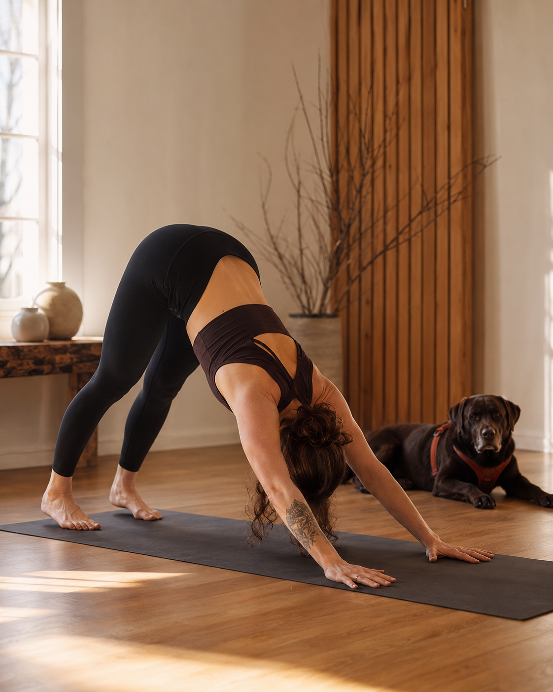

Mein Weg war nicht geradlinig. Aber im Rückblick ziemlich logisch.
Ich bin Vroni. Brand- und Website-Strategin mit KI als Werkzeug, einem guten Blick für Struktur und der festen Überzeugung, dass Sichtbarkeit sich nicht wie Verkleidung anfühlen sollte.
Mein Weg führte über Floristik, Mediendesign, Marketing, Webdesign, KI, Yoga und Trailrunning. Klingt erstmal viel. Im Grunde ging es aber immer um dasselbe: Dinge in eine Form zu bringen, die man sehen, fühlen und verstehen kann.


Vielleicht kennst du dieses Gefühl.
Du kannst viel. Vielleicht sogar so viel, dass es sich manchmal schwer anfühlt, alles auf einen Satz, eine Website oder eine klare Positionierung herunterzubrechen.
Da sind Erfahrungen, Ideen, Werte, Angebote und dieser Wunsch, endlich sichtbar zu werden, ohne dich dabei in eine Rolle zu pressen.
Genau an diesem Punkt beginnt meine Arbeit.

Die Stationen sehen unterschiedlich aus. Der Kern war immer derselbe.
Keine gerade Linie, kein Masterplan. Aber wenn ich zurückschaue, zieht sich durch alles dieselbe Frage: Wie bringe ich etwas Unsichtbares in eine Form, die trägt?
Was sich durch alles zieht: Ich übersetze Inneres in äußere Form.
Ob Blumenarrangement, Website-Struktur, Brand Voice oder Yoga-Sequenz. Im Grunde ging es bei mir immer darum, etwas Unsichtbares greifbar zu machen. Eine Stimmung, eine Idee, eine Haltung.
Heute nutze ich genau diese Fähigkeit für Marken und Websites. Ich sortiere, verdichte und übersetze das, was oft schon da ist, aber noch nicht klar sichtbar wird.
Erst verstehen. Dann sortieren. Dann sichtbar machen.
Bevor ich gestalte, will ich verstehen, worum es eigentlich geht. Erst dann wird aus Klarheit etwas Sichtbares, das wirklich zu dir passt.


Klarheit vor Gestaltung
Design wirkt besser, wenn vorher klar ist, was es ausdrücken soll. Deshalb beginnt jede Zusammenarbeit mit Sortieren, nicht mit Pixeln.
Struktur vor Oberfläche
Eine gute Website sieht nicht nur hübsch aus. Sie führt, erklärt und baut Vertrauen auf.
KI als Werkzeug, nicht als Ersatz fürs Denken
KI hilft beim Sortieren, Entwickeln und Verdichten. Richtung und Entscheidung kommen von mir.
Sichtbarkeit darf sich nach dir anfühlen
Nicht jede Marke muss laut, glatt oder permanent präsent sein. Deine darf klingen wie du.
Energie ist Teil der Strategie
Ein Auftritt sollte nicht nur professionell wirken, sondern langfristig tragbar bleiben. Auch an Tagen, an denen weniger geht.

Hohe Klarheit entsteht selten im Dauerstress.
Ich glaube nicht, dass gute Marken entstehen, wenn Menschen dauerhaft im Stressmodus funktionieren. Klarheit braucht Raum, und gute Entscheidungen brauchen ein System, das nicht ständig überlastet ist.
Deshalb denke ich Marken und Websites nicht nur als Designprojekt. Mir geht es auch darum, ob dein Auftritt zu deinem Alltag, deiner Energie und deiner Art zu arbeiten passt.
Sichtbarkeit soll dich nicht noch mehr antreiben. Sie soll dir helfen, klarer zu wirken und leichter verstanden zu werden.
Für Menschen, die nicht in eine Schublade passen, aber trotzdem klar wirken wollen.
Wir passen gut zusammen, wenn …
- du viele Ideen hast und endlich einen roten Faden brauchst
- deine Website nicht mehr nach dir oder deiner Arbeit klingt
- du sichtbarer werden willst, ohne dich künstlich zu inszenieren
- du Branding, Website, Content und KI zusammendenken möchtest
- du Struktur brauchst, aber keine starre Schablone
- du professionell wirken willst, ohne deine Persönlichkeit abzulegen
Eher nicht die Richtige bin ich, wenn …
- du nur schnell ein hübsches Logo ohne Strategie möchtest
- du eine Website von der Stange suchst
- du KI am liebsten alles entscheiden lassen würdest
- du dich mit deiner Positionierung lieber nicht beschäftigen magst
- du eigentlich nur ein Template in anderen Farben brauchst
Was du von mir erwarten kannst.
Ehrliche Einschätzung
Auch wenn die Antwort mal lautet: So lieber nicht. Ich sage dir, was ich wirklich denke.
Strategische Tiefe
Ich schaue hinter die Oberfläche: Richtung, Zielgruppe, Struktur und Substanz.
Gutes Auge für Design
Gestaltung, die hochwertig wirkt und trotzdem nach dir klingt, nicht nach Vorlage.
WordPress & Elementor
Websites, die nicht nur schön sind, sondern führen, erklären und Vertrauen tragen.
KI-gestützte Workflows
Schneller von der Idee zur Umsetzung, ohne den Kopf abzugeben.
Klare Texte & SEO/GEO
Verständliche Sprache, die Menschen und Suchsysteme gleichermaßen erreicht.

Manche Ideen entstehen nicht am Schreibtisch. Sondern unterwegs.

Und wenn ich nicht am Rechner sitze …
Dann bin ich ziemlich wahrscheinlich draußen. In den Bergen, auf irgendeinem Trail, mit Bailey an meiner Seite oder auf der Yogamatte.
Bewegung ist für mich nicht nur Ausgleich. Oft ist sie der Ort, an dem Gedanken klarer werden. Manche Ideen entstehen eben nicht am Schreibtisch, sondern irgendwo zwischen Bergluft, Hundepfoten und dem Moment, in dem der Kopf endlich mal nicht 37 Tabs offen hat.
Wenn deine Marke gerade mehr kann, als sie nach außen zeigt, lass uns hinschauen.
Schreib mir einfach. Ein paar Sätze dazu, wo du gerade stehst und was sich gerade unklar oder zu viel anfühlt, reichen für den Anfang. Du musst noch nicht wissen, wie das Ergebnis aussieht — das sortieren wir gemeinsam. Ich höre zu und sage dir ehrlich, was ich sehe.
Pflichtfelder mit · Mit dem Absenden erklärst du dich einverstanden, dass deine Angaben zur Bearbeitung deiner Anfrage verwendet werden. Mehr Infos in der Datenschutzerklärung.
Schreib mir
Deine Nachricht landet direkt bei mir — das Formular öffnet dein Mailprogramm. Ich melde mich in der Regel innerhalb von ein bis zwei Werktagen.
Danke — ich melde mich.
Deine Nachricht ist angekommen. Ich antworte in der Regel innerhalb von ein bis zwei Werktagen.